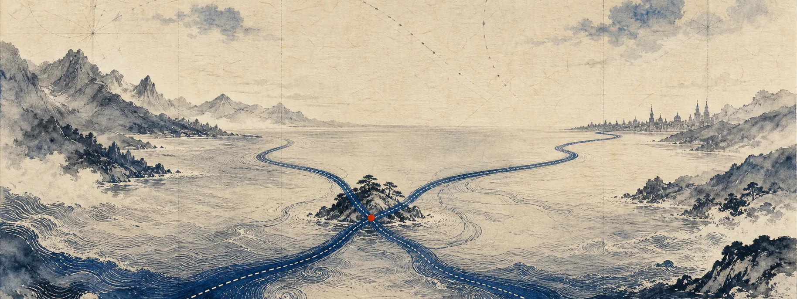
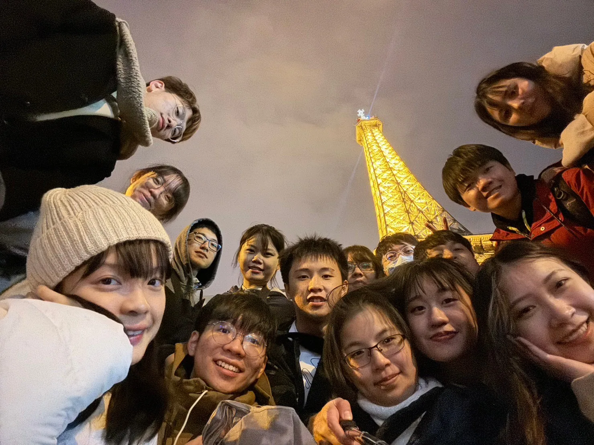
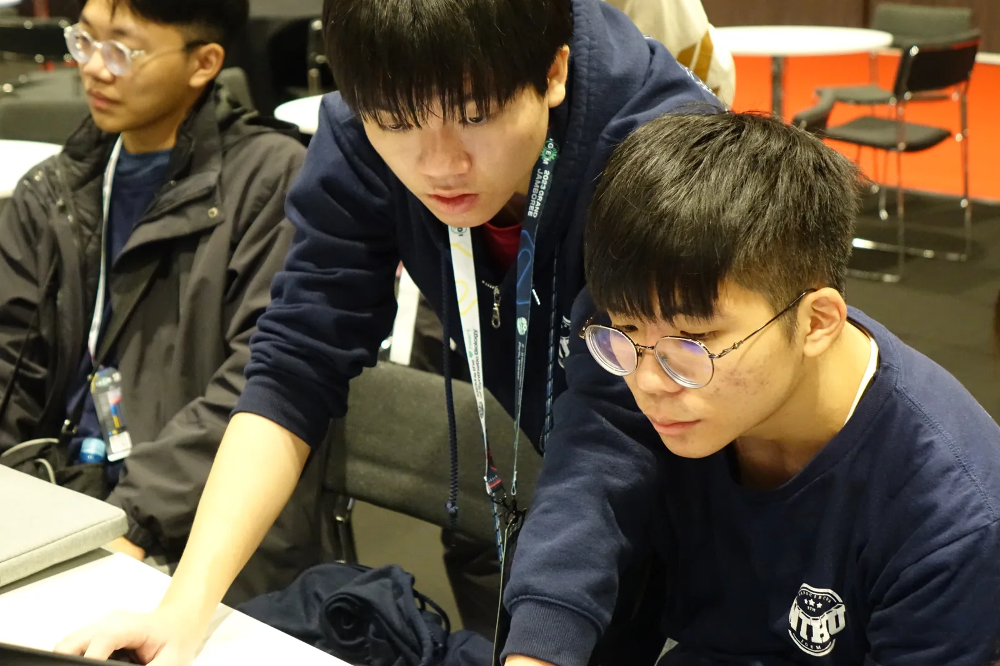
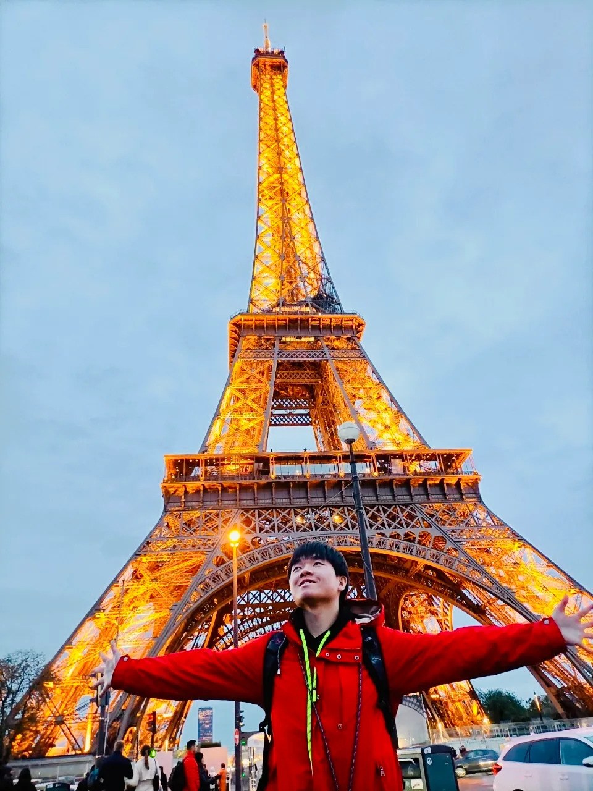

SECTION 04 · AWAY FROM THE DESK第 04 節 · 離開桌前
FIELD現場
Two teams, two international stages, and the work behind the result: the NSF HDR ML Challenge and iGEM.兩個團隊、兩個國際舞台，以及成果背後的工作：NSF HDR ML Challenge 與 iGEM。

L5a
Two journeys兩段現場

2025.02.28 – 03.09Philadelphia · New York
20 days, 20 iterations20 天，20 次迭代
Six-person team · Team lead · 2nd overall六人團隊 · 隊長 · 總排名第二
Read it讀下去
2023.10.31 – 11.11Paris, France
Sixteen people, one gold medal十六個人，一面金牌
16-person team · Dry Lab lead · Gold Medal十六人團隊 · Dry Lab 組長 · 金牌
Read it讀下去L5b
Philadelphia & New York proof sheet費城與紐約印樣
Team → talk → workshop → New York → Philadelphia團隊 → 發表 → workshop → 紐約 → 費城


L5b
Paris proof sheet巴黎印樣
Work → stage → gold → city製作 → 舞台 → 金牌 → 城市


